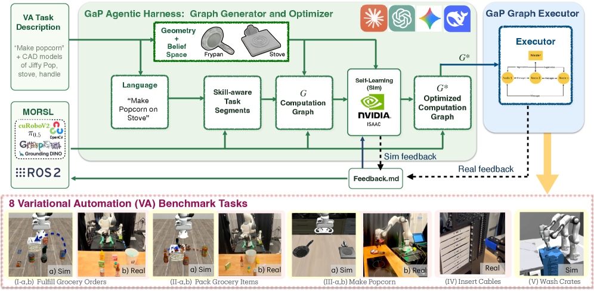
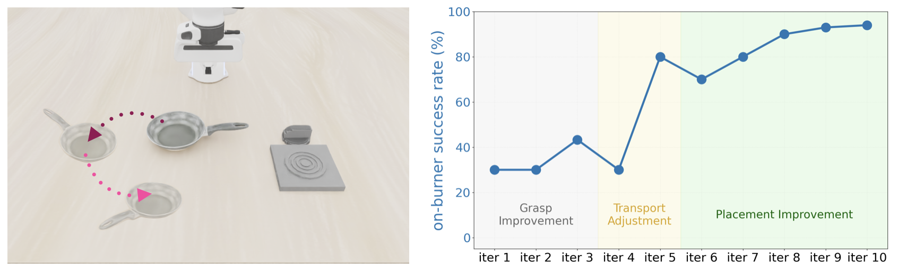

제출: 2026년 7월 6일 · LLM/VLM 에이전트 Gemini-3.1-Flash-Lite · 8개 태스크(시뮬 4 + 실세계 4)
한 줄 요약 (TL;DR)
로봇 정책을 하나의 신경망(VLA)이 아니라 지각·계획·제어 노드로 이루어진 방향성 계산 그래프(directed computation graph)로 표현하고, 다중 에이전트(오케스트레이터·스킬·피드백 에이전트)가 자연어 지시를 그래프로 합성한 뒤, 시뮬레이터 내 리허설 기반 자기학습(self-learning)으로 실패 원인을 분석해 그래프를 반복 수정하는 프레임워크. "Fulfill Grocery Orders"의 어려운 mixed_all 조건에서 GaP 0.97 vs π0.5·MolmoAct2 0.20, "Pack Grocery" fixed 0.99 vs 최고 baseline 0.34로 압도. 실세계에서도 8개 태스크에서 90% 이상 성공률을 달성하며 해석 가능성과 개방세계 적응성을 결합.
1배경 · 문제의식
상업·산업 현장에서 로봇이 신뢰성 있게 동작하려면, 물체의 기하·자세는 변하지만 작업셀(workcell)은 알려져 있는 Variational Automation(VA) 태스크를 안정적으로 처리해야 한다. 기존 접근은 양극단이다: (1) 수작업 로봇 프로그래밍은 해석 가능·검증 가능하지만 변동에 취약하고, (2) model-free 정책(VLA 등)은 개방세계 적응성은 좋으나 블랙박스라 실패 원인 분석·검증이 어렵다.
저자들은 최근 agentic coding 시스템의 발전을 활용해 이 둘을 결합할 수 있는가를 묻는다. 핵심 아이디어는 정책을 코드(그래프)로 표현해 해석 가능성을 확보하되, 다중 에이전트 합성과 시뮬레이터 리허설로 자동 생성·자동 개선하여 적응성을 확보하는 것이다.
2핵심 Contribution
Graph-as-Policy (GaP) 표현 — 로봇 정책을 지각·계획·제어 노드로 구성된 방향성 계산 그래프 𝒢=(V,E)로 정의. 코드보다 구조적이라 정적 검증(타입·엣지 체크)이 가능하고 실행 전 오류를 잡는다.
다중 에이전트 그래프 합성 — 오케스트레이션 에이전트가 자연어 태스크를 기능 단위로 분할하고, 스킬 에이전트가 국소 서브그래프를 생성하며, 오케스트레이터가 이를 실행 가능한 그래프로 배선(wire).
리허설 기반 자기학습 하네스 — Isaac 시뮬레이터에서 병렬 리허설 → 실패 분석 → LLM 에이전트가 그래프 위상/파라미터 수정을 반복해 성능을 자동 향상 (예: Make Popcorn 33% → 시뮬 94% / 실세계 90%).
MORSL 스킬 라이브러리 + 광범위 평가 — 51개 초기 스킬의 Modular Open Robot Skill Library를 구축, 시뮬 4 + 실세계 4 = 8개 VA 태스크에서 baseline을 큰 폭으로 상회.
3Method
Graph-as-Policy 표현
정책은 모듈형 "스킬" 노드로 이루어진 방향성 계산 그래프 𝒢=(V,E)다. 노드는 세 유형으로 나뉜다.
모션 플래닝(cuRobo/cuRobov2), 파지 생성(GraspGen, Contact-GraspNet, M2T2), IK 솔버
제어 노드(Control)
로봇·그리퍼 명령, 궤적 실행, ROS 연동 환경 상호작용
다중 에이전트 그래프 생성
오케스트레이션 에이전트가 자연어 태스크 기술을 기능 세그먼트로 분할하고, 각 세그먼트를 스킬 에이전트가 원자 노드들의 국소 서브그래프로 합성한다. 오케스트레이터가 서브그래프를 모아 실행 가능한 계산 그래프로 배선한 뒤 엣지 인터프리터로 전송해 로봇이 실행한다. 그래프는 실행 전 정적 구조 검증(타입·엣지·dangling 참조 체크)을 통과해야 한다.
리허설 기반 자기학습 (Self-Learning)
M라운드에 걸쳐 다음을 반복한다: (1) belief space ℬ에서 N개의 병렬 태스크 인스턴스 Scene Sampling → (2) NVIDIA Isaac 시뮬레이터에서 병렬 리허설(지각 노드 렌더링·물리·접촉 계산) → (3) 로봇·물체 상태 변화를 등록해 기하적 실패 근본원인 분석 → (4) LLM 에이전트가 노드 교체·엣지 변경·파라미터 갱신으로 그래프 정제. 성능이 정체(plateau)될 때까지 진행.
백본: GaP와 baseline CaP-X의 LLM/VLM 에이전트로 Gemini-3.1-Flash-Lite(temperature 0.1) 사용. 에이전트 역할은 오케스트레이션·행동(behavior)·스킬·피드백 에이전트로 분화된다.
각 아키텍처 요소(그래프 구조·다중 에이전트 분해·검증)가 모두 신뢰성에 필수임을 확인. 다만 실행속도는 아직 산업 표준(500 units/hr, 인스턴스당 7초)에 못 미쳐 VLM 추론·IK 계산 최적화 여지가 크다고 저자들이 명시.
6핵심 Figure / Table

Figure 1 — Graph-as-Policy 개요. 자연어 지시를 다중 에이전트(오케스트레이터·스킬 에이전트)가 지각·계획·제어 노드로 이루어진 방향성 계산 그래프로 합성하고, 정적 검증 후 로봇이 실행하는 전체 파이프라인. (출처: arXiv:2607.05369)

Figure — 리허설 기반 자기학습(self-learning). belief space에서 병렬 인스턴스를 샘플링해 Isaac 시뮬레이터에서 리허설하고, 실패의 기하적 근본원인을 분석해 LLM 에이전트가 그래프 위상·파라미터를 반복 수정한다. (출처: arXiv:2607.05369)
Table 1 (시뮬 성공률) — 논문 핵심 주장의 근거. 물체 기하·순열 변동이 커지는 조건(mixed_all)에서 VLA baseline은 0.10~0.24로 급락하는 반면 GaP는 0.93~0.97을 유지, 해석 가능한 그래프 정책이 VA 태스크의 변동 강건성에서 우위임을 보인다.